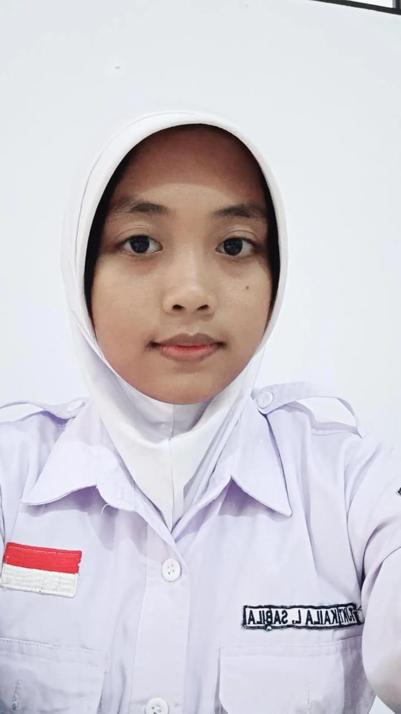

| Nama : | Kaila Luklua Sabila |
|---|---|
| Kelas : | X TJKT 4 |
| Presensi : | 12 |
| Kelamin : | Perempuan |
| Tgl Lahir : | 25, April 2007 |
| Alamat : | Ds.Bumiayu Bapoh RT01/RW02, Kec.Wedarijaksa Kab.Pati |
| Agama : | Islam |
| Hobi : | Main Game Online,Renang |
| Cita-Cita : | Kerja Kantoran,Bisa Jalan-Jalan Setiap Hari,Bisa ke Mekkah Sama Ortu,Bisa Makan Sepuasnya,Jadi Orang Kaya |
| IG Saya Klik Di Sini!! | |
| Foto : |  |
| Paragraf : | Hampir segala macam jenis galau pernah gue rasakan. Segala bentuk kehilangan juga pernah gue alami. Yang belum pernah gue temukan hanya kisah cinta yang Happy Ending. Tapi, gue nggak mau berlarut-larut dalam kegalauan. Segalau-galaunya gue,gue harus tetep punya alasan untuk Move On. Dan.., obat move on itu nggak lain dan nggak bukan adalah DAPAT GANTINYA! Yang namanya jodoh,ya,begitu,semakin di dari,akan semakin sulit ditemukan. Pas nggak dicari,tahu-tahu nonggol kayak si Danny. Walaupun ujung-ujungnya nggak jodoh juga,sih.Kamprett. Oke, gue galau lagi |